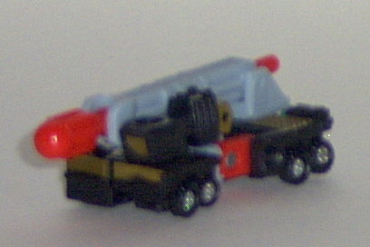
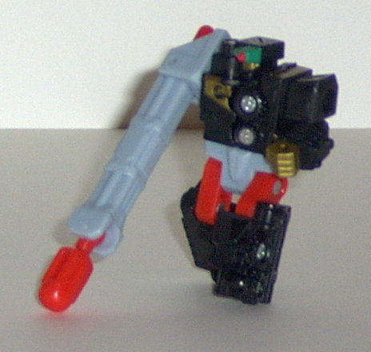
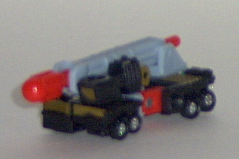
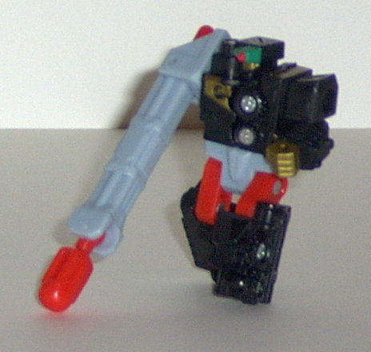
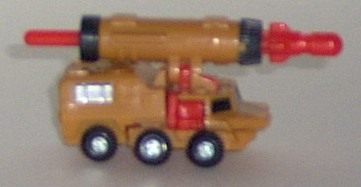
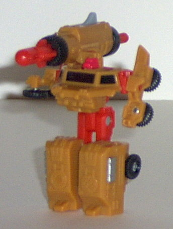
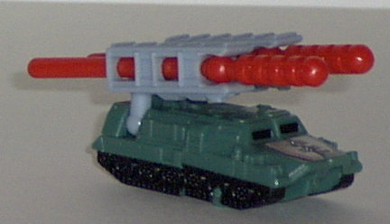
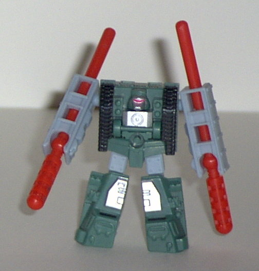

Bonecrusher
Bonecrusher
 
Difficulty of Transformation : Easy
Color Scheme : Black, pale light blue, red, gold, and some silver and military green
Individual Rating : 7.0
Land
Military Team
Allegiance
: Minicon
Size
: Mini-Con (3-pack)
Team Gimmick
: Ability to each fire
a projectile
Overall Rating
: 6.7
Bonecrusher


Difficulty of Transformation
: Easy
Color Scheme
: Black, pale light
blue, red, gold, and some silver and military green
Individual Rating
: 7.0
Vehicle mode is a mobile
missile launcher. This mode is rather poor, and hardly convincing. First,
Bonecrusher's fist just sticks out the back of the "window". I mean, they
didn't even TRY to make it blend in. Also, Bonecrusher's robot head is
pretty darn visible on the backside, and his split-in-half waist and upper
legs completely ruin the solid look this vehicle mode SHOULD have. However,
the missile launcher's cool, even though it's a "push missile" function.
The mold detailing and paint detailing are also extraordinary, with metal
plates and the like everywhere. The Minicon symbol is engraved on the top
of the missile launcher, and the Minicon port is on the front right underside.
A quick note about Bonecrusher's
transformation- it's INSANE, and incredibly innovative. His vehicle mode
almost completely splits in half and rotates around itself in sections
of four. The bad vehicle mode's almost worth the cool transformation right
there!
The robot mode, on the
other hand, is definitely what this toy was designed around. It's freakin'
awesome, and the large "launcher-arm" may be a disconcerting at first,
but once you get used to it, it's really cool. It's a bit longer than I'd
like, though. Bonecrusher also has excellent articulation for a Minicon-
shoulder, elbow (on his "normal" arm), hip, and knee articulation, all
in a very sturdy package. His head design is also very original, and makes
it look like one of his eyes is a targeting reticle. Kickin'!
Bonecrusher's two modes
are entirely different. His vehicle mode is dismal, but his robot mode
is one of the best. It's up to you which mode is more important.
Knock
Out


Difficulty of Transformation
: Very
Easy
Color Scheme
: Light muddy brown,
red, black, and some silver and pale light blue
Individual Rating
: 6.4
Vehicle mode is a mobile
missile launcher. This mode is pretty good, all around- the only real extra
is the half-visible robot head behind the front windows. The mold detailing
is also excellent, and the paint detailing is alright, but could use a
few more applications. Unlike the other two Land Military members, Knock
Out has a spring-fired missile, which is kinda cool on such a small Transformer.
Mini-Con port is on the bottom front center of the vehicle, and the Mini-Con
symbol is molded into the back of the vehicle, slightly under the missile
launcher.
Robot mode has some
definite problems. For one, the lower legs are waaay too chunky in comparison
to the teeny upper legs, and the waist sometimes snaps off during transformation,
which can get kind of annoying. Also, the arms are really floppy and the
right one doesn't stay in its place very well, almost always managing to
lean inward a little, They're also kinda skinny, and not very convincing
arms. And, although the big missile launcher on the shoulder looks cool,
the head doesn't. Oh, it's certainly original, but it's just a red mini-staircase,
looking only VERY vaguely like an actual face. Meh.
Knock Out is pretty
much the polar opposite of Bonecrusher- rather nice vehicle mode, but a
robot mode that is... not good.
Wreckage


Difficulty of Transformation
: Very
Easy
Color Scheme
: Pale light blue, pale
dark military green, red, black, and some silver
Individual Rating
: 6.8
Vehicle mode is, again,
a mobile missile launcher. This one can fire two missiles, though, instead
of one (they are push missiles, though). Ooooo. Anyway, this mode is pretty
cool looking, and nicely proportioned overall. The mold detailing is absolutely
outstanding, with nice little doodads everywhere. The paint detailing is
okay but a bit more on the top might have been nice. Regardless, an excellent
mode. The Minicon port is on the bottom center of the mode, slightly to
the rear. The Minicon symbol is etched on the top of the vehicle, in between
the two launchers.
Robot mode is pretty
cool-looking- well, except for the arms. They're kinda odd-looking, as
they have the missiles going right through them. Arms are etched onto the
undersides of the launchers, though. The face is pretty cool-looking as
well, even though it's merely carved onto the underside of the vehicle
mode. The articulation is not extraordinary for a Minicon, and is actually
little below average- his legs can move side to side at the hips and back-and-forth
at the knees, and he has ball joint motion at his shoulders, but that's
it. Still, an okay mode.
Wreckage is pretty much
the middle ground for the Land Military Team. Decent-looking in both modes,
but his robot mode suffers from some articulation problems, and the arms
are funky.
The Land Military Team is my favorite first-Wave Minicon team. They're all cool in at least one mode, and Wreckage is cool in both. Plus, they all have (relatively) big blasters! Can't top that!
Review by Beastbot